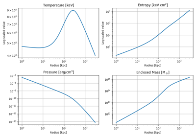

Pisces Example Gallery#
Welcome to the Pisces Example Gallery!
This section presents a curated collection of concise, hands-on examples illustrating the key features and modeling capabilities of the Pisces library. Whether you’re working with analytic cluster models, constructing physical profiles, or exploring differential geometry in astrophysical systems, these examples are built to teach by doing.
Each example is:
Focused on a single, well-defined concept,
Ready to run and customize in your own workflows,
Accompanied by inline documentation and visual outputs where helpful.
Explore the gallery to get started quickly, understand how to use Pisces effectively, and adapt these templates to accelerate your scientific modeling.
Examples are grouped by their conceptual location within the Pisces codebase.
Astrophysical Models#
This section contains examples showcasing the construction and analysis of complete astrophysical models. These are end-to-end workflows that typically involve density profiles, temperature or pressure modeling, and often magnetic fields or particle distributions.
Each example is intended to demonstrate a realistic scientific use case where Pisces can be applied.
Examples are sorted by their model type.

Galaxy Cluster Model from Temperature and Gas Density
Profiles#
This section provides examples illustrating how to use and customize built-in profiles for density, temperature, entropy, and related physical quantities.
Examples here are generally isolated to demonstrate specific analytic or empirical profiles and how they can be composed into more complex systems.
Particle Generation and Sampling#
This gallery focuses on examples where particle sampling and data generation are the main goals. This includes distributing particles from profile-based models, assigning velocities, and exporting snapshots for simulation use.
Extensions and Experimental Features#
This section showcases examples that go beyond the core functionality of Pisces. It includes experimental modules, plugin-based systems, or utilities that may be under active development or not yet part of the stable API.
Contents:
Visualization tools
Third-party integrations
Experimental and contributed utilities